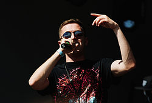
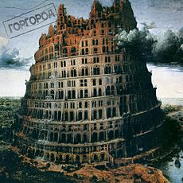

Биография
Больше о рэпере Oxxxymiron
Мирон Янович Фёдоров родился 31 января 1985 года в Ленинграде в еврейской семье. Его отец — Ян Валерьевич Фёдоров, физик-теоретик, в 1994 году защитил в Петербургском институте ядерной физики имени Б. П. Константинова докторскую диссертацию на тему «Статистические свойства собственных функций случайных одночастичных гамильтонианов». Мать — библиотекарь. Учился в санкт-петербургской школе № 185. Когда Мирону было 9 лет, его семья переехала в город Эссен (Северный Рейн-Вестфалия, Германия), и Мирон поступил в гимназию имени Марии Вехтлер (Maria-Wächtler-Gymnasiumrude). По его словам, у него были напряжённые отношения с немецкими одноклассниками; эта тема позже нашла отражение в его ранней песне «Последний звонок». Первые попытки читать рэп Мирон предпринял в возрасте 13 лет под псевдонимом Миф (сокращение от Мирон Фёдоров).
После одной из поездок на родину в 14 лет уверенность Мирона в том, что он родоначальник рэпа на русском языке, пропала.
Когда Мирону было 15 лет, его семья переселилась в город Слау (Беркшир, Великобритания), и здесь, больше не имея проблем с одноклассниками, он усиленно взялся за учёбу. Вскоре английская учительница истории — выпускница Оксфордского университета — предложила ему попробовать поступить в Оксфорд после окончания школы. В 2004 году, подав документы и пройдя собеседование, Мирон поступил в университет на факультет английского языка и литературы.
В 2006 году получил диагноз «маниакально-депрессивный психоз» и был исключён по этой причине из вуза, но поступил повторно. В июне 2008 года получил диплом Оксфорда по специальности «средневековая английская литература».
После учёбы в Оксфорде Мирон переехал жить в Ист-Энд и начал поиски работы. Из-за «чрезмерной квалификации» он не смог найти работу по профессии. Как утверждает рэпер, он «работал кассиром, переводчиком, грузчиком, гидом, ларёчником, репетитором, конферансье, офисным планктоном и консультантом с копытом». Новый круг общения, состоявший из русскоязычных эмигрантов, подтолкнул Мирона вернуться к хип-хопу. Он стал заниматься музыкой под псевдонимом «Oxxxymiron», появившимся как сочетание имени с литературным термином «оксюморон» (англ. oxymoron) и утроенной —X", отсылающей к большому количеству нецензурной лексики в его песнях.
В 2015 году был выпущен сериал Лондонград, созданный во главе со сценаристом Михаилом Идовым на основе приключений Мирона в Лондоне.
Летом 2019 года поручился перед Мосгорсудом за 20-летнего активиста и студента ВШЭ Егора Жукова, который был арестован после несанкционированной акции 27 июля в Москве.
Слова рэпера
У нас была группа, название которой я забыл, состояли в ней Миф и Сага. Сага так и не написал ни одной строчки и впоследствии сторчался. А я придумал русский рэп. То есть натурально был уверен, что я первый человек, читающий рэп по-русски (интернета у меня не было, а русскоязычных эмигрантов, которые могли бы поколебать мою уверенность, в Германии тогда ещё было достаточно мало).
Я разговаривал на смеси так называемого «королевского» и книжного английского с немецким акцентом. Я слушал американский рэп, поэтому использовал много сленговых выражений. Я говорил такие слова, как «innit» во время моего собеседования в Оксфорде — думаю, что это одна из причин, по которой они приняли меня.
Я как-то говорил, что мы приехали сделать то, что не удалось Гитлеру и Наполеону. Что ж, история повторилась. Оказалось, что всё это время мы преследовали разные цели.
На данный момент я могу сказать, что мне стыдно за русский рэп. Сейчас стало очень много непонятных рэперов — они рифмуют хорошо, у них техника есть, но рэпа в них нет. Они не представители хип-хоп-культуры, они мейнстримщики, которые делают на этом бабки. Для них это бизнес и не более того. Они никогда не были в этой культуре, не варились в этом, российском. Какие-то там приезжие, блин, рэперы из Европы, которые раньше русский рэп унижали, а теперь они рэп читают на русском, типа Oxxxymiron. И люди их слушают. Я видел их слушателей, не дай бог, чтобы у меня такие были
Творческая деятельность Оксимирона
МC Mif/Миф (2001)
В 2001 Мирон появился на Hip-Hop.Ru и познакомился со многими рэперами, в сентябре выпустил свой первый трек «Демо-фристайл в стиле бардкор» (на данный момент утерян). Затем чуть позже он записал трек с исполнителем VeTaL из группы iSQUAD под названием «Витязи словоблудия». Затем он записал ещё несколько треков под названием «Лучшие МС» и КВРП (Каменный век русской поэзии). В этом же году участвовал в 1-м независимом баттле Hip-Hop.ru, где дошёл до 2 раунда, однако дальше не прошёл, так как не сдал трек на 2 раунд. В конце года вышел последний трек «Al Ogon». Мирон сделал перерыв на 7 лет.
Optik Russia (2008—2010)
«Вечный жид», Vagabund (2011)
Ссылка на альбом Вечный жид (вики)miXXXtape (2012—2014)
«Горгород» (2015 — 2016)
Ссылка на альбом Горгород (вики)
Скандалы и инциденты
Конфликт с группой «Каста»
Во время тура «Октябрьские события» 2010 года появился слоган «На хуй „Касту“!», который позже будет олицетворять Vagabund. Основная версия появления данного лозунга следующая: во время выступления Шокка и Окси в одном из клубов Украины в соседнем клубе города предстояло выступление группы «Каста». Украинский монополист-организатор русских рэп-концертов «Нота» пытался помешать выступлению Окси и Шокка из-за страха того, что последние уведут часть аудитории с концертов «Касты». Как раз после этого Schokk и Oxxxymiron на всех своих совместных концертах и даже в треках скандировали вышеизложенный слоган. Это быстро подхватили и их фанаты. 21 июля 2012 года, уже после ухода из Vagabund, Оксимирон принял участие в музыкальном фестивале «Пикник „Афиши“». Одновременно с ним на «Пикнике» участвовал рэпер Влади из группы «Каста». Как рассказывает участник «Касты» Шым, Мирон извинился перед группой за высказывания в их сторону и пожал всем руки.
Конфликт с Ромой Жиганом
20 октября 2011 года, воспользовавшись случаем пребывания Vagabund в Москве во время тура по странам СНГ, в их съёмную квартиру ворвался рэпер Роман Чумаков, более известный как Рома Жиган, в сопровождении десяти человек. Цель визита — выяснение причин неоднократных выпадов Schokk’а в сторону Жигана в треках. Роман, угрожая оружием (по словам Хинтера), заставил оппонента просить прощения на коленях, при этом несколько раз ударил его по лицу. Вскоре после инцидента Шокк в одиночку покинул страну и сделал несколько видеообращений, на что Мирон ответил роликом, в котором объяснил свою точку зрения на произошедшее и объявил о своём намерении покинуть Vagabund и разорвать все связи с Schokk’ом.
После произошедшего Мирон остался в хороших отношениях с Ромой Жиганом и даже снялся в его фильме. После огласки это событие заняло первое место под слоганом «Нападение стаи лещей на Вагабунд» на портале Hip-hop.ru в рейтинге «Событие года — 2011».
Rap.ru
20 октября 2011 года, в разгар тура Vagabund по СНГ, Schokk и Oxxxymiron были приглашены на передачу What’s Up, выходившую на телеканале Rap.ru. Разговора как такового не состоялось, а отношения между Rap.ru и участниками Vagabund остались натянутыми
В марте 2012 года Oxxxymiron был приглашён на музыкальную церемонию Stadium RUMA (Russian Urban Music Awards), организованную порталом Rap.ru, с которым Мирон до этого имел напряжённые отношения. Во время выступления на сцену вышел двойник в маске, в то время как сам исполнитель остался за кулисами. Пока двойник жестикулировал под фонограмму на сцене, Мирон написал в своём твиттере: «Сижу, перечитываю „Двойника“ Достоевского…»